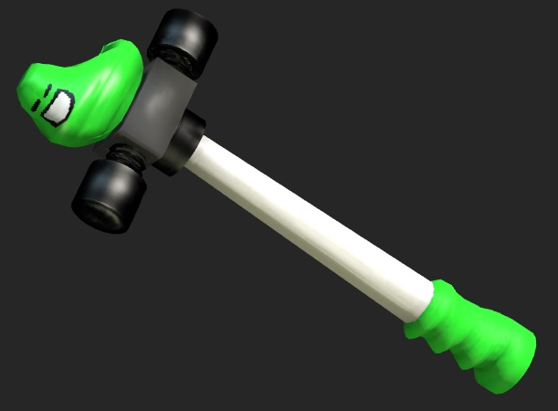

The Pogohammer is one of the weapons used by John Egbert of Homestuck fame. I decided to create a 3D model of it as an assignment. It's my first serious 3D model of hopefully many to come!
The pogohammer was modeled in Maya, with textures created using GIMP, Mudbox for the normal map, and mental-ray for the ambient occlusion.
